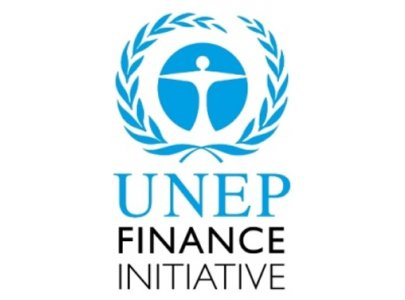

23 - 24 November • Edinburgh, UK
23 - 24 November • Edinburgh, UK
"This event provides a unique platform to bring some of the finest minds from the fields of ecology and economy to create a shared vision about how business can take cognisance of natural capital into its metrics of not only profit and revenue but its responsibility to human well being in a larger context." - Pushpam Kumar, Chief: Ecosystem Services Economics Unit, UNEP
The United Nations Environment Programme Finance Initiative is a global partnership between UNEP and the financial sector which focuses on the impacts of environmental and social considerations on financial performance. As a partner of the 2015 World Forum, we invite you to join us to participate in these vital discussions at the World Forum on Natural Capital.

Conference stream C: Focus on finance and investment
Themes: This stream focuses on how natural capital risk is being incorporated into decision making by banks, insurers and fund managers, and what this will mean in relation to the cost of capital, credit ratings, insurance premiums and access to finance. The full event programme can be found here
Click here to view Anders's full profile

Click here to view Ivo's full profile
UNEP & UNEP FI members attending the World Forum as delegates will be entitled to specially discounted delegate rates. To receive this discount please email bookings@naturalcapitalforum.com
Share this page:
Share this page: